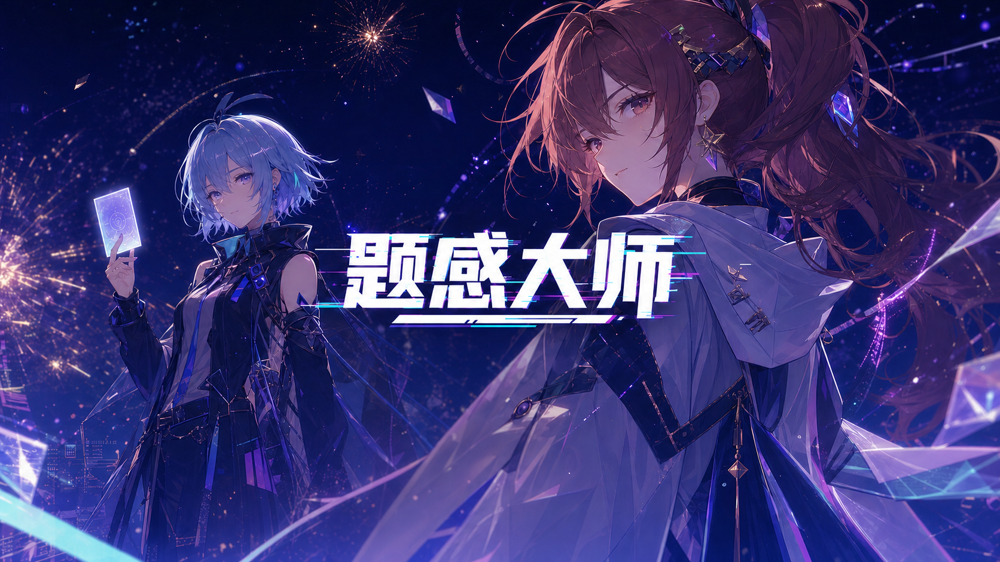
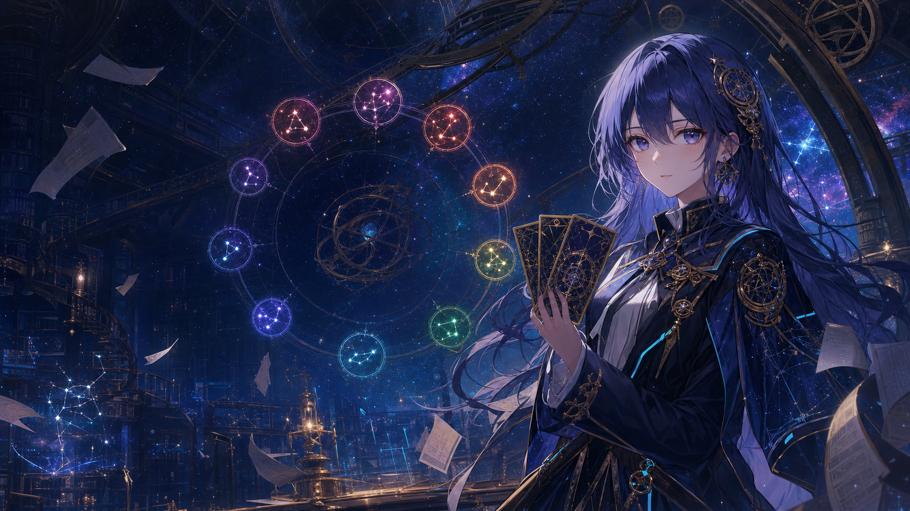

题感大师

01唤醒知识星座CHOOSE YOUR CONSTELLATION
九科不是菜单，而是九种观察世界的方法。
THE CELESTIAL ARCHIVE
选择一片
知识星域
时间、制度与因果
02选择解码仪式CHOOSE THE RITUAL
历史星域已连接
FOUR WAYS TO SEE
你想怎样
接近规律？
难度不只是数字，它会改变干扰方式与理解任务。
TM
题感大师COGNITIVE NEXUS · V2.0 HISTORY EXAM LAB
COGNITIVE TRACE READY
关系不会写在
题目表面。
观察、怀疑、组合。把看似无关的题卡放到一起，看看你的解释能否让它们同时成立。
完成牌局0已发现羁绊0探索值0
史
CURRENT CONSTELLATION
历史
困难模式100
场独立牌局已装载每局随机出现 3–8 张牌，组合规模由关系本身决定。
HISTORY · DEEP TRACE
历史 · 困难模式
探索值 0本次旅程 01星牌 6
FIRST DIVINATION
这里没有规定答案牌数
阅读 3–8 张随机题卡，自由选择 2–8 张。只要你选择的牌共享一条能够成立的关系，羁绊就会回应。
1观察›2组合›3见证翻牌
本引导只在首次牌局自动出现，可在个人中心重置。
OBSERVATION METHOD
别找相同字，找同一种解释
主体谁或什么对象机制为什么发生边界限定条件是什么意图命题人要辨别什么
A FAINT SIGNAL
星轨传来微弱回声
已经尝试三次。需要接收一条不揭示答案的观察提示吗？
低强度提示
THE CARDS HAVE SPOKEN
瞬间理解
探索值 +12星图节点 +1关系迁移 +1
写出自己的解释即可继续，不自动判分。
RELATION BOUNDARY
首次错误提示
放大阅读不会改变当前选择。
VARIABLE COSMOS ATLAS
九域羁绊星图
旋臂星系 · 历史时间流
OBSERVER ARCHIVE · V2.0
观测员档案
去标识化测试数据可随时查看、汇总、导出与删除。
观
OBSERVER ID
星轨观察者
LV.01 · 题目观察者0 / 100 EXP
完成牌局0羁绊发现0伪羁绊0探索值0
SUBJECT PROGRESS
九科星图进度
RECENT DISCOVERIES